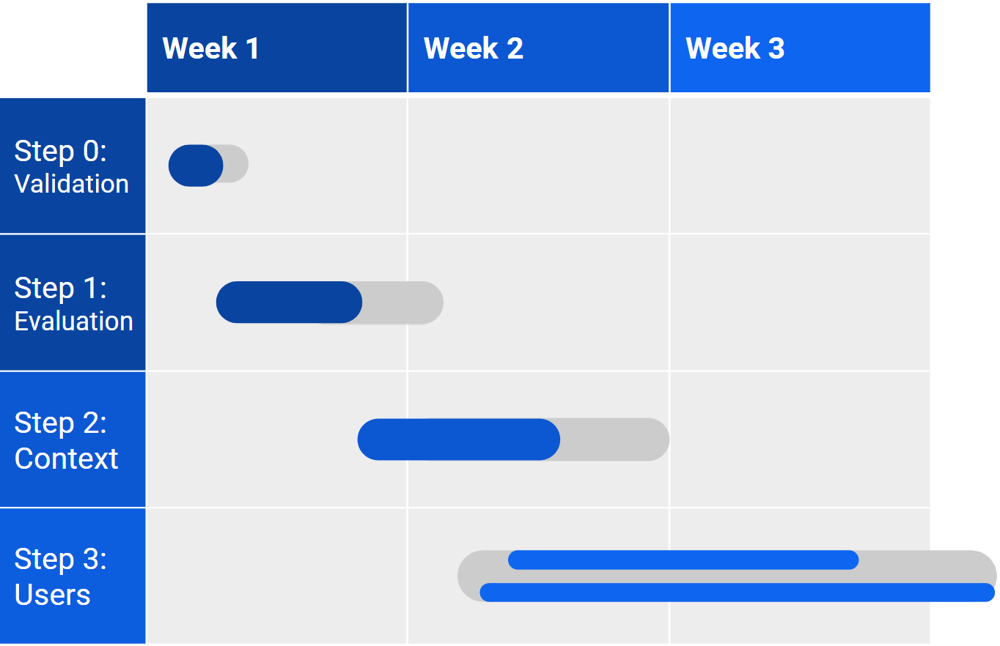

Nadia Doutcheva, PhD
User Experience Researcher, Human Factors Engineer
Lengthy Log-in Case Study
The Challenge
- working with a product team on a new mobile application
- lengthy registration flow has seen significant drop-off on completions
- no contact information of users that have started or finished registration
- no information regarding age, sex, or location
How would you tackle this from a research perspective?
What forms of research would you conduct?
Assumptions
1. This statement: “You have no contact information of users that have started or finished registration in the application. You have no information regarding age, sex, or location from the users that downloaded the app” is given as a to make it harder for me to find the users, and IS NOT an error in the design of the registration form.
2. I am coming into this project blind as a new team member with no prior information about this app is or what its goals are. I am acting as a consultant to the team that brought me on and working with them directly to answer my questions.
3. This is a live app that people already use.
Initial Questions
1. What is this app? What are its goals?
2. Who designed or created this app?
3. Who is it for?
Research Proposal Overview
Step 0. Validation of Data
Step 1. Evaluation
Step 2. Context
Step 3. Users
Step 0: Validation of Data
How do we know that the registration is dropping off due to the registration flow? Where did this data come from?
We don’t want to go into a problem with incomplete, inaccurate, or misrepresented data.
Goal: Validate that the problem we think is the actual problem and we aren’t working with a misconception
Timeline Expectation: 1-3 days
Work with engineers and team to gather and analyze the analytic data from the app to understand where this data or assumption came from.
Outcome Assumption: The data shows that the users are indeed dropping off due to the lengthy registration process.
For example, data shows downloads and no registrations and no error reports.
Step 1: Heuristic evaluation of the registration flow
Goal: Efficient and low cost way to identify initial potential problem areas
- Questions:
- Who designed the registration flow? What are their goals?
- Why is registration long? What information is being collected?
- Do we need to collect all the information we are collecting at the very beginning of this application?
Timeline Expectation: ~2-3 days
Process
- use Nielsen's 10 Principles for interface design
- Act as a naive, first time user
- Examine the registration flow through a Human Factors perspective to understand:
- - its purpose and goals
- -its length
- -where users might be dropping off
- -potential pain points
- -breaking of expectations
- -what permissions are being granted
- Often, even small things like using a dropdown instead of radio button can cause drop off for forms
Heuristic Evaluation Outcomes
Compile examples of violated principles
Create suggestions on how to rework violated principles or pain points
Suggest potentially reorganizing sections of the form
- easiest information like demographics up front
- data that can be captured automatically
- app saves everything automatically
- doesn’t require user to complete every step before continuing
- establish minimum completion before they can access the app
Outcome:
Presentation to team with design recommendations and form reorganization based on violated heuristics, human factors principles, and best UX practicesStep 2: Lightweight Research
Goal: Lightweight approach to start understanding target users, who is actually using it, and the contexts and situations in which they are using it.
Work with the product managers to understand who this app is for, and when they envision this app to be used.
Allows me to see when problems might be occurring or why the registration flow may not be successful.
Conduct “lightweight research” as a “quick and dirty” way to start getting feedback without having direct access to the users
“Lightweight research” strategies
- Work with Google Play and Apple Store to see if I can get demographic info on who has been downloading this app
- Check with the engineering team if there is any analytics built into app to understand usage
- Look at the reviews of the app on stores and online
- Search online if anyone has written about the app, included it on lists or articles, written troubleshooting information, recommended it
- If this is an enterprise app, ask product managers if we have any feedback from clients
- Look at competitor apps and how their product or registration flow differs from our app
Outcome: Storytelling presentation of users’ anecdotal experiences, and potential design recommendations or system fixes, and how to move forward based on “quick and dirty” feedback and personas
Step 3: Two-Pronged Research Approach
Goals: Receive feedback from actual and potential users in the context which they would be using the app to understand how it could be improved
These two prongs should be conducted in parallel.
Prong 1: In-app data collection
Prong 2: Task Analysis in Context
Prong 1: In-app data collection
In app data collection time analysis
If registration is longer than one page, capture time spent during registration on each page or section to see how long it is taking and where people are dropping off.
Goal: gather more insight about why the registration flow might be challenging
Additionally, the app could include a short feedback survey that pops up periodically while users are using the app.
Survey should be 3 questions:
- How satisfied are you with this app? 1-5
- How likely are you to recommend this to a friend or colleague? 1-5
- What would you like to see improved about the app? Free-text entry
Prong 2: Task Analysis in Context
Find your users and ask them directly!
Use the information gathered about users from lightweight research to access potential participants for in context interviews
- In person interviews working with recruiting team
- Self recruit with enterprise clients
- Go out into the field and test in their environment
- UserTesting.com, Mechanical Turk, UsabilityHub, UserZoom, etc.
- Where we find users depends a lot on app context
Create tasks that include what we want to study: registration flow and X (results of Step 2). Maximize time with users by answering multiple research questions. Put user in situation where they would be using the app. For example, if they are in their workplace, go to their work or create workplace environment. Put user in mindset of their job, role, and goal.
For the registration flow task: 1) Ask user to download and run the app for the first time; and 2) Complete the registration flow for the first time. Ask user to think aloud as they go through the tasks in the app and explain what they are doing to you as though they are teaching you.
- Interview Questions should include:
- What are you doing while using [app]?
- What are your goals for using [app]?
- What information do you need?
- Where are you when using [app] and what else and who else is around?
- What may interrupt you?
- What may stop or discourage you from using [app]?
- Be an observer, noting down their thoughts and actions as they complete the tasks including:
- Where they might get interrupted
- How quickly they can resume task
- Pain points
- Confusion
- Surprise
- Break of expectations
Data Analysis
Create patterns from data to uncover the root of a problem. Form the data into a concrete story about the context and the users. Consider how or why the registration flow or app usage might be interrupted and why they may not resume. Present data to team with examples like quotes from participants and answers to the survey, as well as time based data showing where users dropped off. Validate and iterate on the personas created. Create a story about when, how, and why users are using app.
Outcomes of Research
- A clear picture of the user in their environment, a story of how they use this app
- Recommendations or a framework for how to simplify their user experience with a focus on the registration flow
- Validated personas available for future use and improvements for the app